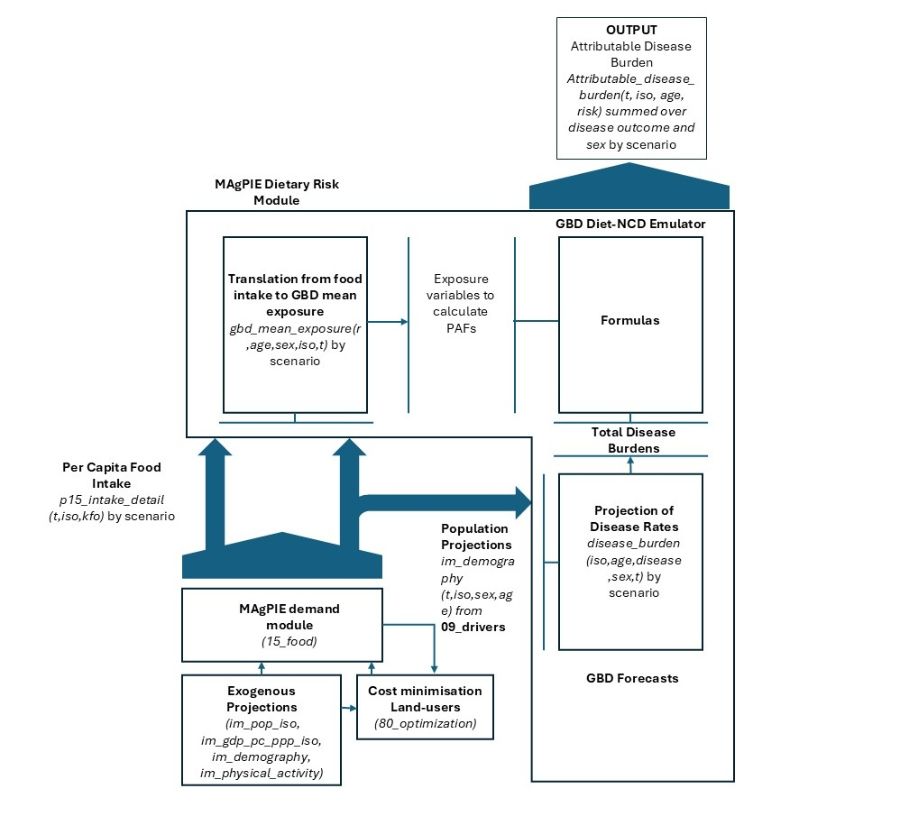

The main function of the dietary risk module (1) is to estimate the
health impacts from non-communicable diseases (NCDs) through dietary
intake. It applies a comparative risk assessment framework based on the
Global Burden of Disease (GBD 2017) (2) methodology. The module combines
food intake from the module 15_food, together with baseline
mean dietary risk exposures, relative risk parameters, minimum
thresholds (TMRELs), and values for overall disease burden by disease
outcome (YLLs and YLDs). The module is designed to output attributable
disease burden across countries, age groups, sexes, years, and
scenarios.
Figure 1. Interfaces to other modules.

| Input | Dimensions | Description | Unit |
|---|---|---|---|
p15_intake_detail |
\((t, iso, kfo)\) | Total per-capita food intake for each model time step \(t\), country \(iso\), and MAgPIE food-demand commodity
\(kfo\), generated by MAgPIE module
15_food; scenario-specific through the MAgPIE run. |
kcal/capita/day |
im_demography |
\((t, iso)\) | Population for each model year \(t\) and country \(iso\), used to generate projected disease rates. | \(10^6\) persons |
| Input | Dimensions | Description | Unit |
|---|---|---|---|
food_to_risk |
\((kfo, risk)\) | Mapping between each MAgPIE food commodity/group \(kfo\) and the corresponding GBD dietary risk factor \(risk\). | Dimensionless |
gbd_mean_exposure |
\((iso, sex, age, risk)\) | Baseline GBD mean exposure for each country \(iso\), sex \(sex\), age group \(age\), and dietary risk factor \(risk\) in 2020. | Risk-specific exposure unit (e.g. g/capita/day, % of total energy) |
relative_risk |
\((risk, disease, age, exp.)\) | Relative risk for each dietary risk \(risk\), associated disease outcome \(disease\), and age group \(age\), evaluated at dietary exposure level \(exposure\). | Dimensionless |
tmrel |
\((risk)\) | Theoretical minimum-risk exposure level for each GBD dietary risk factor \(risk\). | Risk-specific exposure unit (e.g. g/capita/day, % of total energy) |
disease_burden |
\((iso, sex, age, disease)\) | Baseline YLL/YLD burden for each country \(iso\), sex \(sex\), age group \(age\), and disease outcome \(disease\), used to generate future disease-burden projections. | YLLs or YLDs |
| Output | Dimensions | Description | Unit |
|---|---|---|---|
attributable_disease_burden |
\((t, iso, sex, age, risk, s)\) | Dietary-risk-attributable disease burden for each model year \(t\), country \(iso\), sex \(sex\), age group \(age\), dietary risk factor \(risk\), and scenario \(s\), summed across associated disease outcomes. | DALYs |
The dietary risk module links food-intake projections from MAgPIE to
the GBD Diet-NCD emulator to estimate future diet-related disease
burden. MAgPIE provides food-intake projections
(p15_intake_detail) by scenario for each country, year and
food product category, expressed in kcal/capita/day. These outputs are
generated by the food demand module (15_food) and provide
the dietary inputs to the population health module.
The GBD Diet-NCD emulator does not directly use MAgPIE food product
categories as exposure variables. Instead, it requires dietary risk
exposures corresponding to the GBD dietary risk factors. An intermediate
translation step is therefore required to map MAgPIE food product
categories onto corresponding GBD dietary risks. The following mapping
matrix (described as food_to_risk in the table above) is
implemented in the available Python code. This can be adjusted by the
user.
| MAgPIE food product categories | GBD dietary risk factors | Exposure definition |
|---|---|---|
| Ruminant meat, Pork | Diet high in red meat | Red meat (beef, pork, lamb, and goat, but excluding poultry, fish, eggs, and all processed meats) |
| Milk and dairy products | Diet low in milk | Milk including non-fat, low-fat, and full-fat milk, excluding soy milk and other plant derivatives |
| Milk and dairy products | Diet low in calcium | Calcium from all sources, including milk, yogurt, and cheese |
| Ruminant meat, Pork | Diet high in processed meat | Meat preserved by smoking, curing, salting, or addition of chemical preservatives |
| — | Diet high in sodium | 24 h urinary sodium measured in g per day |
| Sugar | Diet high in sugar-sweetened beverages | Beverages with ≥50 kcal per 226.8 g serving, including carbonated beverages, sodas, energy drinks, fruit drinks, but excluding 100% fruit and vegetable juices |
| — | Diet high in trans fatty acids | Trans fat from all sources, mainly partially hydrogenated vegetable oils and ruminant products |
| Cereals, pulses, vegetables, fruits and nuts (other), brans | Diet low in fiber | Fibre from all sources including fruits, vegetables, grains, legumes, and pulses |
| Others | Diet low in fruits | Fruits (fresh, frozen, cooked, canned, or dried fruits, excluding fruit juices and salted or pickled fruits) |
| Pulses | Diet low in legumes | Legumes (fresh, frozen, cooked, canned, or dried legumes) |
| Others | Diet low in nuts and seeds | Nut and seed foods |
| Temperate cereals; maize; tropical cereals; rice; brans | Diet low in whole grains | Whole grains (bran, germ, and endosperm in their natural proportion) from breakfast cereals, bread, rice, pasta, biscuits, muffins, tortillas, pancakes, and other sources |
| Others | Diet low in vegetables | Vegetables (fresh, frozen, cooked, canned, or dried vegetables, excluding legumes and salted or pickled vegetables, juices, nuts, seeds, and starchy vegetables such as potatoes or corn) |
| Fish | Diet low in seafood omega-3 fatty acids | Eicosapentaenoic acid and docosahexaenoic acid |
| Vegetable oils | Diet low in polyunsaturated fatty acids | Omega-6 fatty acids from all sources, mainly liquid vegetable oils, including soybean oil, corn oil, and safflower oil |
MAgPIE food-intake projections are used to generate GBD-consistent dietary risk exposure trajectories from 2020 to 2050 using a proportional adjustment approach. Projected per-capita food intake from MAgPIE is used to scale baseline mean dietary exposures provided by the GBD study.
\[ \alpha_{t,iso,kfo,s} = \frac{ \texttt{p15\_intake\_detail}_{t,iso,kfo,s} }{ \texttt{p15\_intake\_detail}_{2020,iso,kfo,s} } \]
where \(t\) = model year; \(iso\) = country; \(kfo\) = MAgPIE food commodity/group; \(s\) = scenario; and
p15_intake_detail = per-capita food intake from MAgPIE
module 15_foods.
The scenario dimension \(s\) is introduced when outputs from separate MAgPIE runs are combined.
To calculate the mean exposure, gbd_mean_exposure, to
dietary risk factor \(r\) for country
\(iso\), age group \(age\), sex \(sex\), year \(t\), and scenario \(s\), the proportional change in MAgPIE food
intake for the food commodity or group corresponding to risk \(r\) is applied to the baseline GBD mean
exposure.
\[ \texttt{gbd\_mean\_exposure}_{iso,sex,age,r,t,s} = \texttt{gbd\_mean\_exposure}_{iso,sex,age,r,2020} \times \alpha_{t,iso,\beta(r),s} \]
where \(\beta(r)\) denotes the mapping from GBD dietary risk \(r\) to the corresponding MAgPIE food commodity/group.
In addition to changes in dietary exposure derived from MAgPIE’s food-intake projections, scenarios may include narrative assumptions describing changes that are nor represented in the MAgPIE food-demand outputs (3). Rather than specifying adjustments separately for every country, narrative adjustments can be defined by country income group, with each country assigned the adjustment corresponding to its income group classification.
The narrative adjustment factors can be applied to the proportional changes as follows:
\[ \alpha_{t,iso,kfo,s}^{adj} = \alpha_{t,iso,kfo,s} \times \left( 1 + \frac{N_{IG(iso),kfo,s}}{100} \right) \]
Where \(\alpha(t,iso,kfo,s)\) is the proportional change derived in the previous section, \(IG(iso)\) denotes the income group assigned to country iso, and N_(IG(iso),kfo,s) is the narrative adjustment expressed as a percentage change for that income group, food commodity, and scenario. For example, N = 5 represents an additional 5% increase and \(N\) = 5 an additional 5% decrease.
The adjusted proportional change is subsequently applied to the baseline GBD mean exposure using the method outlined previously.
\[ \texttt{gbd\_mean\_exposure}_{iso,sex,age,r,t,s} = \texttt{gbd\_mean\_exposure}_{iso,sex,age,r,2020} \times \alpha_{t,iso,\beta(r),s}^{adj} \]
The accompanying code allows income-group specific adjustments to be made. The code can be modified to accommodate country-specific, regional, or other group-based adjustments where there are more appropriate.
Projected dietary exposures are combined with the configurable
health-model inputs relative_risk and tmrel to
estimate population attributable fractions for each relevant dietary
risk-disease pair. Default values are based on the GBD dietary risk
framework, but these inputs can be replaced where updated or alternative
estimates are available. The detailed PAF calculations, including the
treatment of exposure distributions, risk-disease relationships,
mediation, and joint PAFs, are implemented within the GBD Diet-NCD
emulator and are described in the accompanying code documentation (1).
This module therefore treats the PAF calculation as an existing
health-model component and focuses on providing scenario-specific
exposure and disease-burden inputs required by the emulator.
Future Years of Life Lost (YLL) and Years Lived with Disability (YLD) projections are obtained from the Institute for Health Metri and Evaluation (IHME) for each country, disease outcome and age group for the period 2022-2050. Because the dietary risk model. Because the dietary risk model required sex-disaggregated burden estimates, the total projected YLL and YLD values were redistributed between males and females using sex-specific proportions derived from GBD 2021 estimates.
The resulting sex-specific business-as-usual (BAU) projections
(disease_burden) provide the reference disease burden
pathway against which alternative scenarios are evaluated. Once
alternative scenario trajectories are defined, projected disease burden
can be adjusted relative to BAU using scenario-specific demographic
projections provided by MAgPIE module 09_drivers.
Population by country and time-point is supplied through the interface
im_demography(t_all, iso).
For each disease-burden measure, either YLL or YLD, scenario-specific
disease_burden is derived by scaling the corresponding BAU
disease-burden projection according to the ratio of scenario-specific to
BAU population for the same country, age group, sex, and year.
\[ \texttt{disease\_burden}_{t,iso,sex,age,disease,b,s} = \texttt{disease\_burden}_{t,iso,sex,age,disease,b,BAU} \times \frac{ \texttt{im\_demography}_{t,iso} }{ \texttt{im\_demography}_{2020,iso} } \]
where disease_burden represents the projected YLL or YLD
burden for year \(t\), country \(iso\), sex \(sex\), age group \(age\), disease outcome \(disease\), and scenario \(s\). im_demography represents the
corresponding MAgPIE population projection from module
09_drivers, and BAU denotes the reference business-as-usual
scenario.
This preserves the underlying IHME epidemiological trajectory while
adjusting projected YLLs and YLDs to reflect the demographic assumptions
associated with each MAgPIE scenario. The resulting
disease_burden projections are subsequently combined with
the diet-related population attributable fractions generated by the GBD
Diet–NCD emulator to estimate
attributable_disease_burden.
A step-by-step user guide is provided for users wishing to run the MAgPIE dietary risk module using CSV inputs. The guide covers software requirements, repository setup, required input file structures, command-line execution, optional narrative adjustments, disease-burden projections, model outputs and a pre-run checklist.
Open or download the PDF user guide
Lord S, Solomon S, Paulus E. GBD Diet–NCD Model Emulator [Python] [Internet]. 2026 [cited 2026 Sep 15]. Available from: https://github.com/shaun-solomon/GBD-Diet-NCD-Model-Emulator
GBD 2017 Diet Collaborators. Health effects of dietary risks in 195 countries, 1990–2017: a systematic analysis for the Global Burden of Disease Study 2017. Lancet. 2019;393(10184):1958–1972. doi:10.1016/S0140-6736(19)30041-8. PMID: 30954305.
Alessandrini R, Bodirsky BL. Food futures: Storylines of dietary megatrends along the Shared Socioeconomic Pathways (SSPs). Proc Nutr Soc. 2020;79(OCE2):E327. doi:10.1017/S002966512000275X.